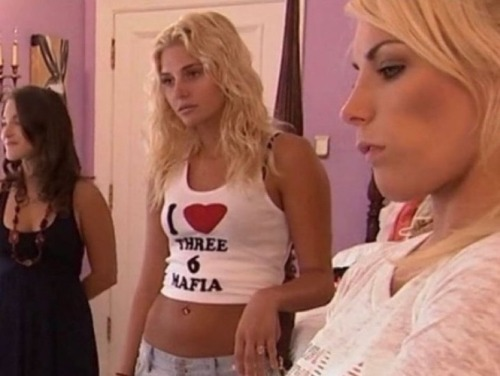

|
YOU WANT THE TRUTH?
WITNESS THE INVISIBLE HAND OF GOD AT WORK
FIRST, REPEAT THE FOLLOWING OUT LOUD:
I, [name], do swear that I will be faithful and bear true allegiance to my partner and fellow nosferatu hunter.
(individually)
When dark forces rise, we will stand strong in the face of true evil. One shot, one kill, unstoppable under God. Victory & education for all. We stalk terror wherever it hides. These deeds we do so others may live. We are freedom's answer to fear. When nosferatu threatens to tilt the balance of peace between the good people of this world and the next, we are the only answer.
Manibus nostris certe morietur.
the following are user submitted tidbits sent to the CHANNEL17 GRIEVANCE INBOX:

unrelated but yeah shes cute but is she a woman of her word? does she move with integrity, honor her commitments, inspire me to be better and lead me spiritually?
green flags i look for: "emotional intelligence" YEAH NO SHIT whos gonna see that and go "aw shit im emotionally stupid nvm" and swipe left??
 Using ALL CAPITOL LETTERS is called shouting &
is considered rude, showing anger. Be Careful!
Using ALL CAPITOL LETTERS is called shouting &
is considered rude, showing anger. Be Careful!
ill never forget how the ppl around me moved when i landed in the ER and couldn't work for a month. ppl that i was there for no matter what never asked me how i was.
i was even working with someone on a project, FOR FREE, who stopped talking to me when i couldnt work anymore.
who you keep around you says a lot about you and also has a huge effect on you.
DON'T send junk mail. If you haven't anything to say, don't say anything.
And don't send soliticious material unrequested - ie - SPAMMING. It costs
come users money to be on line downloading their mail & you are "stealing"
from them when you send junk mail they have not asked for.
is she a modest 4, acts weird in a bad way, is orbited by balding white guys who stream to 20 viewers, and replies way too fast? run
every second makes me older and im never getting those seconds back why would i spend that time doing dumb shit
be sensitive in your correction of people on a list. If you have
a "flame" or rebuke to send, do it personally and consider well
it's necessity before sending.
every self obsessed artist with no identity is hopping on the 2000s trash pop trend forgetting that meaningful success is never found on the aesthetic
level and it takes personality to make it all work for longer than 3 minutes. in short nobody would be funny enough to wear this shirt now

ive had to explain so many times that i dont like brat or charli xcx because its a brand of pop escapism that i think promotes a
malicious type of vapidity thats pretty much only reserved for 20 year olds who legitimately dont know any better.
its kind of insane how many people are terrible judges of character and will excuse a lot of behavior because its not considered unacceptable to their immediate social surroundings.
nobody stands on values & beliefs they've formed themselves, it's always look around and do the thing that makes the least amount of people around you mad. seen many people harbor abusers with this mentality
a magician once told me 'pussy takes precedence over all'. he then did the classic "cut assistant in half" bit to thunderous applause.
i legitimately do not understand how a friend can resent another friend's success. that shit hurts so much. not only does it make the resentful friend stew in a narcissistic jealousy,
but the friend who has succeeded doesn't even get to enjoy their success. literally everyone loses
may all you women stop chasing rat men in 2026. we can do better
hii I think I saw you last Thursday you were wearing those black jeans, right? I wasnt totally sure it was you, so I didnt say hi. Kinda regretting it now. If youre up for chatting, my main account is [LINK REMOVED]
i envy my friends success because i wish it were me. realistrically i know they work insanely hard and deserve it but im jealous and cant help it!
Lil wayne rington download.com
Im in love with him so much. I want to snatch the soul out his body. Im so afraid of overdoing it
|